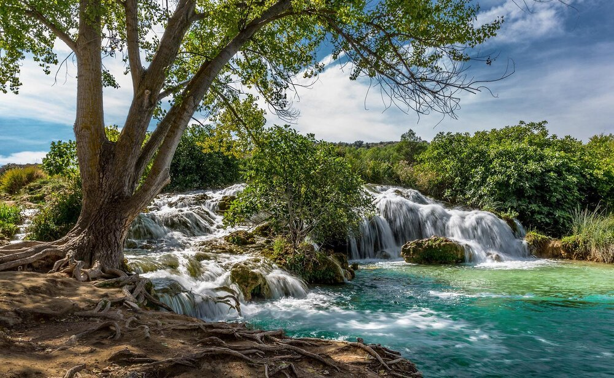
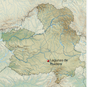
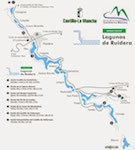
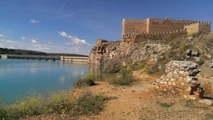
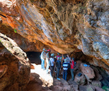

El parque natural se encuentra repartido entre los municipios de Argamasilla de Alba, Ruidera, Alhambra (sin lagunas), Ossa de Montiel y Villahermosa. Dentro de los límites del parque se encuentran también el castillo de Peñarroya, las ruinas del castillo de Rochafrida, la cueva de Montesinos donde Cervantes hizo pasar una noche a Don Quijote y la casa del Rey en el pueblo de Ruidera.
El parque ofrece actividades de todo tipo para el ocio y el deporte.
Las Lagunas de Ruidera son un espacio natural único y uno de los humedales más bellos de Europa, un auténtico espectáculo visual formado por 16 lagunas a lo largo de 25 kilómetros. Los primeros manantiales emanan en la laguna Blanca y las aguas llegan hasta las lagunas bajas y el embalse de Peñarroya. Las aguas turquesa de las lagunas -enlazadas por bellas cascadas y arroyos- se encajonan en un espectacular paisaje que encierra una gran riqueza faunística.
En el interior del parque natural, existen diversas rutas e itinerarios para realizar a pie y practicar el senderismo o para recorrerlas en bicicleta de montaña. Estas rutas de diversas dificultad, y longitud se encuentran debidamente señalizadas. Algunas de ellas enlazan con el tramo de la Ruta del Quijote que atraviesa el parque natural.
En la localidad de Ruidera, encontrará el centro de información, donde le ofrecerán amplia información sobre el parque y sus valores naturales, siendo recomendable su visita, como primera toma de contacto con este espacio natural.
Actividad recomendada para conocer mejor el paraje. Se recomienda hacerlas sin prisa. Los itinerarios se pueden realizar de forma libre, encontrándose en su mayoría debidamente señalizados.
Ruta circular de unos 6 kms. Comenzando en la aldea de San Pedro bordearás la Laguna San Pedra, llegarás al cerro de Los Almorchones, desde donde podrás disfrutar de una magnífica panorámica de las Lagunas San Pedra y Tinaja. Por el camino de la Ringurrina llegarás a la barrera de la laguna Tomilla (Baño de las Mulas) continuando por la orilla de la Tomilla, al llegar a la Conceja, desviándote a la izquierda saltarás el Cuerda y volverás a la aldea de San Pedro.
Ruta circular de 4,3 kms. partiendo de la aldea de San Pedro, por el margen de la carretera llegarás al camino que te llevará a las ruinas del Castillo de Rochafrida, en el valle del río Alarconcillo. Podrás recorrer las ruinas y disfrutar de la tranquilidad y belleza de este paraje. Ruta sencilla excepto la subida al castillo que es algo más exigente.
Ruta de dificultad baja y lineal, de tramo corto (menos de 2 kilómetros) es ideal para realizarla a pie. Senda de la mítica y universal Cueva de Montesinos, conocida cueva literaria por aparecer en dos capítulos de Don Quijote de La Mancha. La ruta comienza en la ermita de San Pedro y sube a través de la cuesta de la almagra, pasando por cinco paradas y llegando a la Cueva de Montesinos donde podremos sumergirnos en ella y vivir las aventuras que el Hidalgo Caballero pasó allí.
Ruta lineal de 21 kms. (solo ida), partiendo junto al cementerio de Ruidera, pasando por el margen de las lagunas bajas Cueva Morenilla, Coladilla y Cenagosa, y recorriendo la rivera del Pantano de Peñarroya, llegarás a su presa, y al Castillo de Peñarroya ubicado junto a ella. El recorrido es bastante llano, el camino está en buen estado.
Ruta lineal de 8 kms (solo ida) y dificultad media. En sus 2 primeros kilómetros bordea la laguna Conceja y te llevará hasta la primera de las Lagunas de Ruidera, la Blanca, con una morfología muy diferente a las demás. Camino en un estado regular y recorrido bastante llano. Recomendable para bicicleta aunque también se puede realizar a pie.
Esta ruta se inicia en el baño de las Mulas, en la parte final de la laguna Tomilla y recorre parte del camino del Abuchao en dirección a Ossa de Montiel y luego tomando el camino hacia el Ossero, llegando al vado blanco donde se puede enlazar con la ruta de la laguna Blanca. Bordea las lagunas Tomilla y Conceja.
Se trata de una ruta circular que parte de la Central de Santa Elena y sube hasta 3 miradores ubicados en la Mesa del Almendral. Forma parte de varias rutas que recorren el Refugio de Fauna de Hazadillas y Era Vieja y el Monte de Utilidad Pública AB-171
Al igual que la anterior, forma parte de varias rutas que recorren el Refugio de Fauna de Hazadillas y Era Vieja y el Monte de Utilidad Pública AB-171. Se trata de una ruta lineal que va bordeando las lagunas Lengua, Salvadora, Santos Morcillo, Batana y Colgada; comienza en las inmediaciones de la Laguna San Pedro y termina en la Central de Santa Elena.
La visita guiada en vehículo 4×4 se realiza por el parque natural, acompañados por un guía-conductor, por las zonas menos conocidas del parque. Para realizar estas rutas en coche, es necesario la previa contratación de la visita.
Se pueden disfrutar de las rutas a caballo en cualquier momento del año. Una forma de conocer el paraje de una forma diferente.
